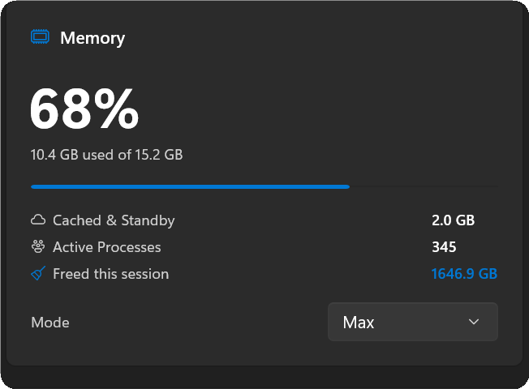
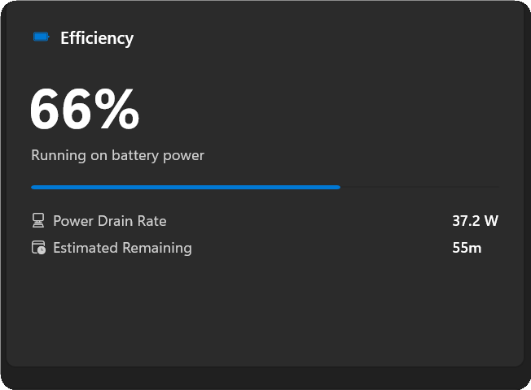
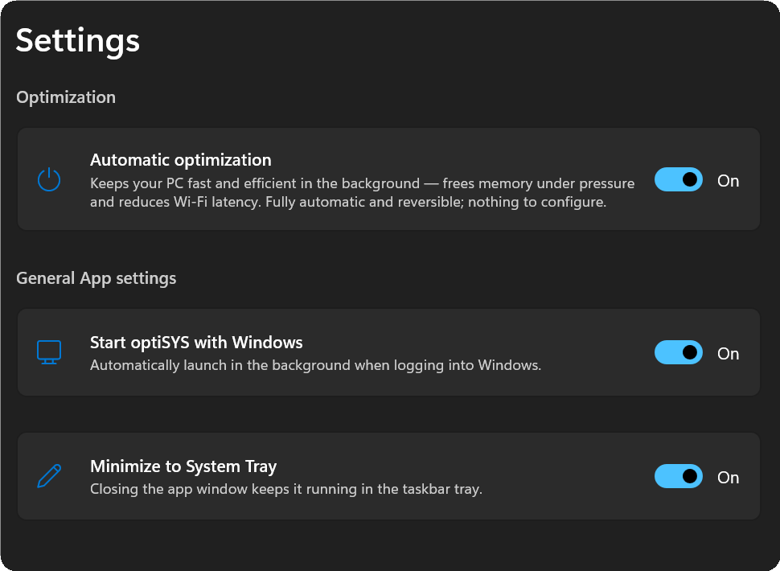

presents
optiSYS
Keeps your PC quick and your connection smooth — quietly, in the background.
One switch. Nothing to set up.
01
Memory
Frees up memory when things get tight, so your PC stays responsive.

02
Battery
When you unplug, it eases back background work to stretch the charge — never overriding the power mode you've set.

03
Wi-Fi
Smooths out the brief stutters Windows causes checking Wi-Fi in the background.
